Extras
Compilación y ejecución de programas en C desde terminal
Como compilar y correr un programa desde la terminal
Compilar y correr un programa desde la terminal
Introducción
En este tutorial se mostrará como compilar desde la terminal de GNU/Linux. Esto resulta útil para cuando no se dispone de un IDE (Integrated Development Environment) para programar. Ubuntu nos permite compilar, enlazar y correr el programa desde la misma terminal! :D
Para ello utilizaremos GCC. La sigla GCC significa "GNU Compiler Collection". Originalmente significaba "GNU C Compiler"
Paso 1
Crear el archivo .c
Debemos crearlo en una carpeta que contendrá los archivos fuente .c para luego compilarlos (Esto es para ser mas ordenado).
Podemos utilizar cualquier editor de texto, para este caso usaremos Gedit (Buscar Gedit en los programas y lanzarlo)
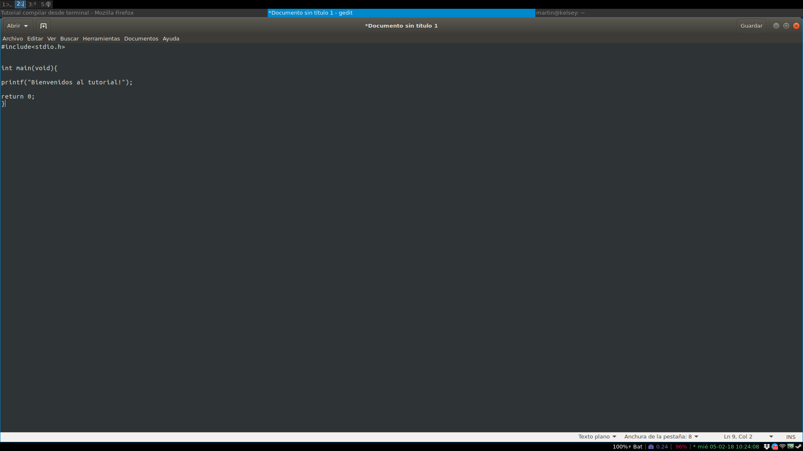
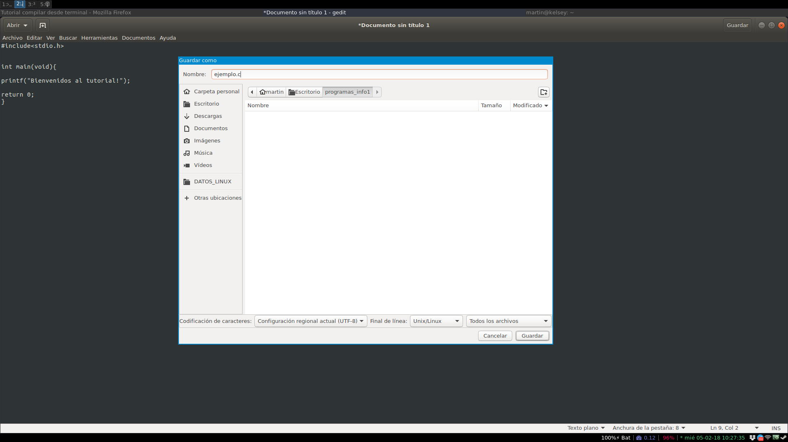
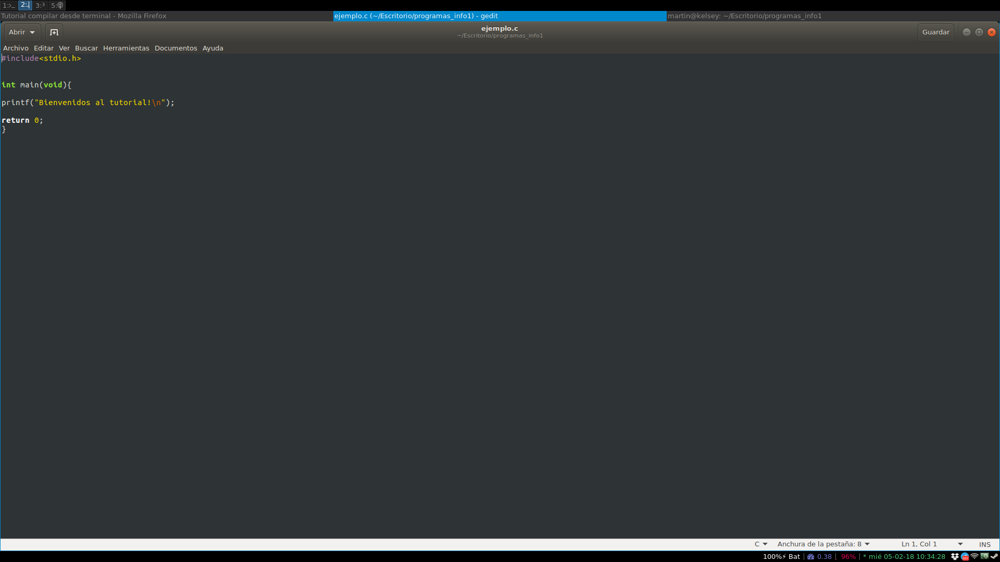
Paso 2
Ir a la carpeta donde están nuestros programas
Esta carpeta contendrá los archivos fuente .c para luego compilarlos.
Abrimos una terminal, en Linux Ctrl+Alt+t (la terminal puede variar entre computadora y computadora).
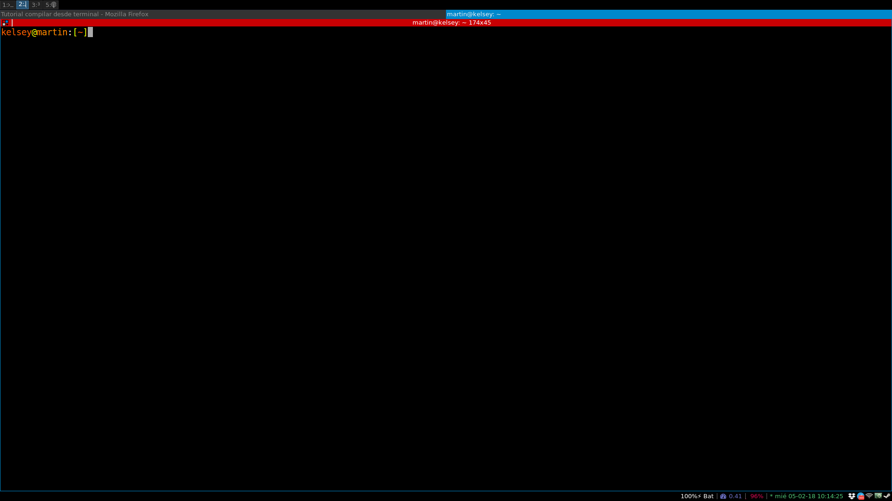
En la terminal escribimos:
cd ~/Escritorio/programas_info1
ls
El comando cd cambia de directorio y ls lista los archivos que tengamos en la ruta actual
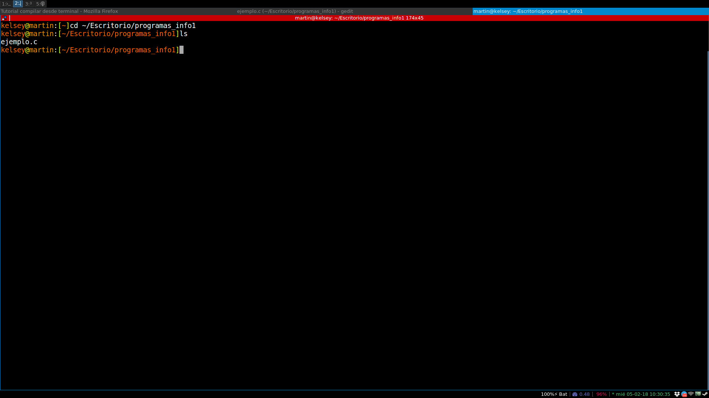
Paso 3
Compilar y correr el programa
Por último, falta compilar el programa y ejecutarlo
En la misma terminal que tenemos abierta, tenemos que escribir lo siguiente (pueden copiar y pegar desde el explorador a la terminal):
clear && gcc -Wall -pedantic-errors -std=c90 ejemplo.c -o salida.o && ./salida.o
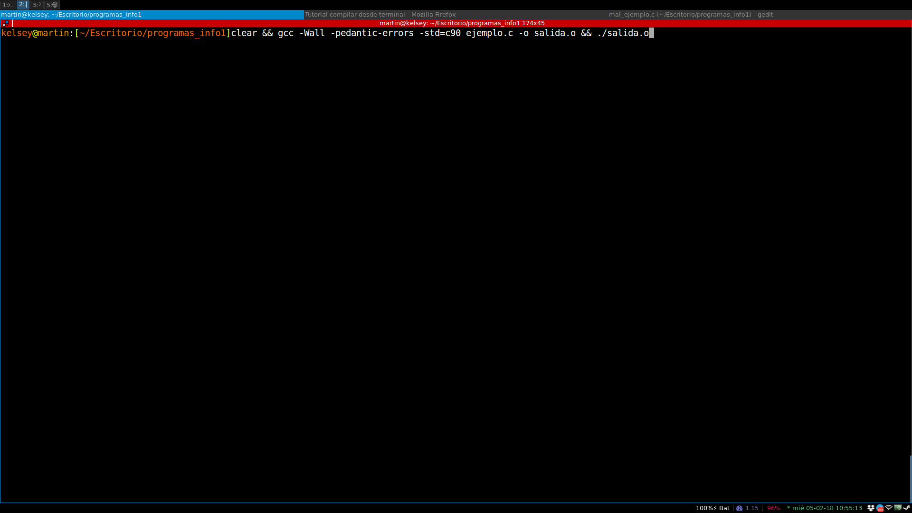
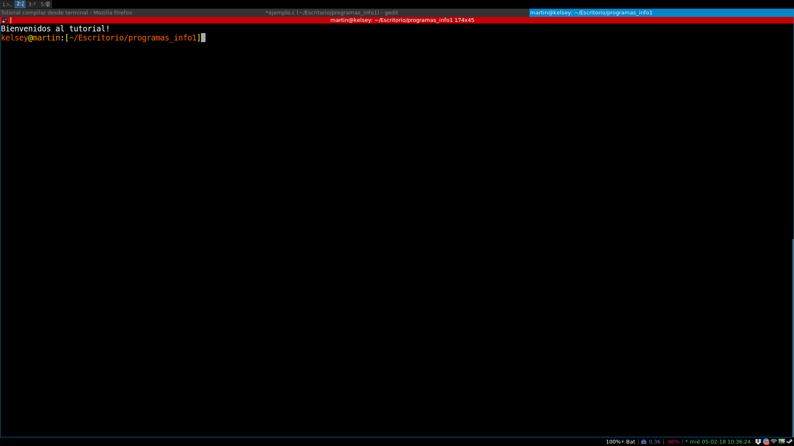
Paso 4
Corregir errores
Ahora simularemos un ejemplo de programa con errores, para interpretar la salida y ver mas o menos donde puede estar el error
Crearemos un programa "mal_ejemplo.c" idéntico a "ejemplo.c" pero en este caso no colocaremos el punto y coma al final del printf.
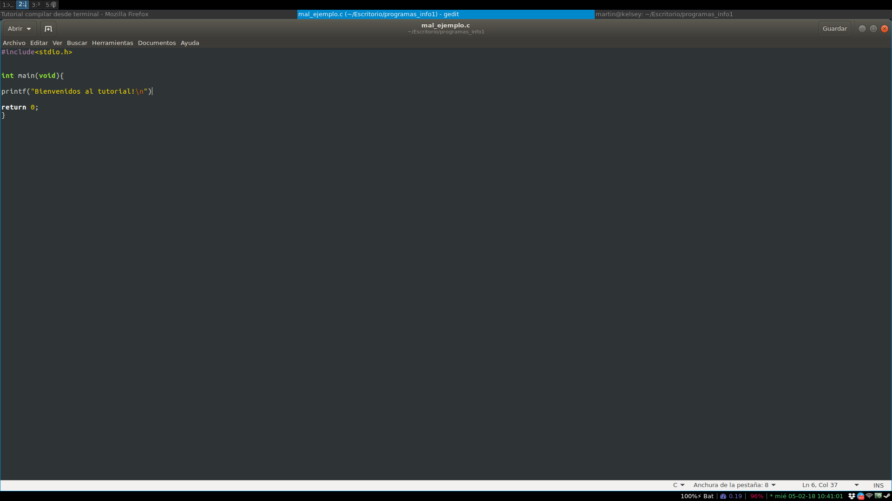
clear && gcc -Wall -pedantic-errors -std=c90 mal_ejemplo.c -o salida.o && ./salida.o
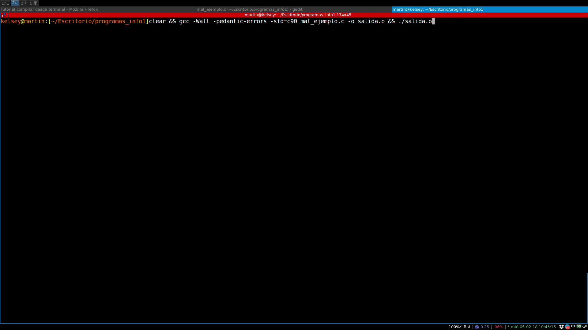
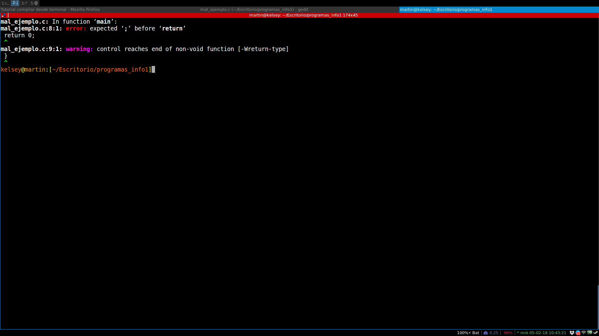
Agregando el ; el programa compila y corre normalmente.
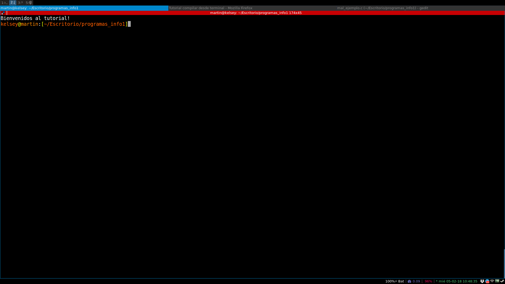